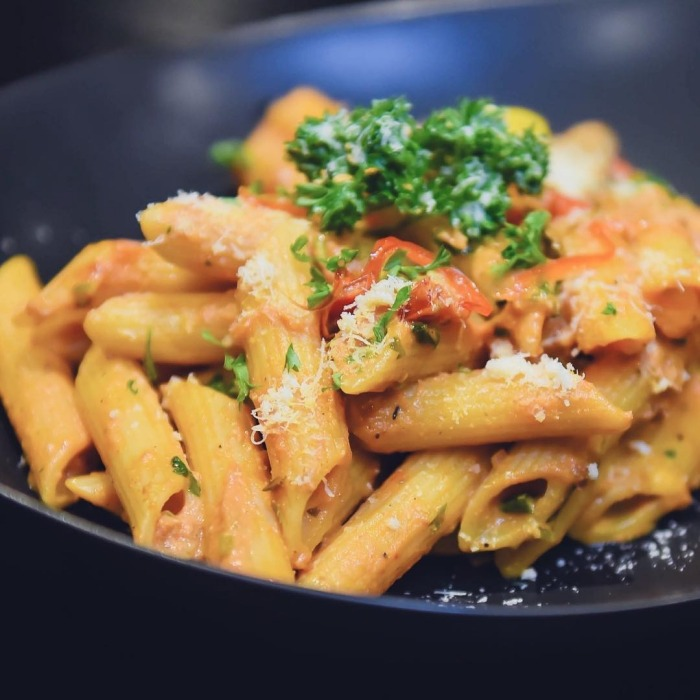

Spicy Arrabiata Penne
Vegetarian
Italian
Ingrédients
| Penne rigate |
1 pound |
| Olive |
1/4 cup |
| Garlic |
3 cloves |
| Chopped tomatoes |
1 tin |
| Red chilli flakes |
1/2 teaspoon |
| Italian seasoning |
1/2 teaspoon |
| Basil |
6 leaves |
| Parmigiano Reggiano |
Sprinkling |
Instructions
-
Bring a large pot of water to a boil. Add kosher salt to the boiling
water, then add the pasta. Cook according to the package instructions,
about 9 minutes.
-
In a large skillet over medium-high heat, add the olive oil and heat
until the oil starts to shimmer. Add the garlic and cook, stirring,
until fragrant, 1 to 2 minutes. Add the chopped tomatoes, red chile
flakes, Italian seasoning and salt and pepper to taste. Bring to a
boil and cook for 5 minutes. Remove from the heat and add the chopped
basil.
-
Drain the pasta and add it to the sauce. Garnish with
Parmigiano-Reggiano flakes and more basil and serve warm.
Help